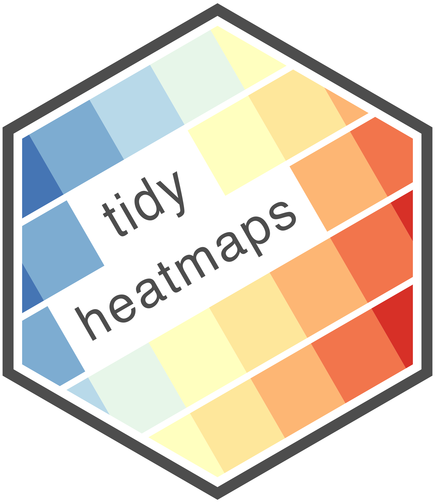

Heatmaps serve as a means to visually represent a matrix of individual data points through geometric shapes, usually rectangles, with colors representing their respective values. This technique is especially useful to visually explore patterns in large data sets. While a number of R packages exist to generate heatmaps from data matrices, the goal of tidyheatmaps is to simplify the generation of publication-ready heatmaps from tidy data. By offering an interface to the powerful pheatmap package [@pheatmap], it allows for the effortless creation of intricate heatmaps with minimal code.
Statement of need
Classical implementations of heatmaps like heatmap() from the stats package [@base.r], heatmap.2() from the gplots package [@gplots], but also specialized heatmap packages including ComplexHeatmap [@complexheatmap], pheatmap [@pheatmap] and superheat [@superheat] rely on a data matrix as the main input. This makes perfect sense because the 2-dimensional representation of values in a heatmap faithfully resembles the structure of a 2-dimensional matrix. However, several popular data science packages bundled in the tidyverse [@tidyverse] favor the use of tidy data frames as the most versatile data format to feed different data science routines including data wrangling, modeling and visualization. The challenge of constantly going back and forth between matrix and tidy data-based work flows, however, causes a lot of friction in daily data analysis and was the main motivation for the development of tidyheatmaps.
As such, tidyheatmaps tries to solve a similar problem as the tidyHeatmap package [@tidyHeatmap], which is a tidy wrapper around the ComplexHeatmap package [@complexheatmap]. However, tidyheatmaps takes a different approach by providing one powerful work horse function that incorporates all supported customizations in one function call. Moreover, tidyheatmaps uses a different downstream plotting engine [@pheatmap] and focuses on the most common plotting routines thereby avoiding unnecessary complexity. tidyheatmaps has been used in scientific papers to visualize mRNA sequencing [@Rosenkranz.2021] and miRNA sequencing analysis [@Winkler.2023].
Usage
The main input to the tidyheatmap() function is a tidy data frame. The arguments rows, columns and values are used to select those variables from the data frame that should be used to represent rows, columns and colored values, respectively. Several additional arguments can be used to customize heatmap properties including scaling, order, annotation, gaps, and colors () and to export the heatmap to file.
library(tidyheatmaps)
tidyheatmap(df = data_exprs,
rows = external_gene_name,
columns = sample,
values = expression,
scale = "row",
annotation_col = c(sample_type, condition, group),
annotation_row = c(is_immune_gene, direction),
gaps_row = direction,
gaps_col = group
)